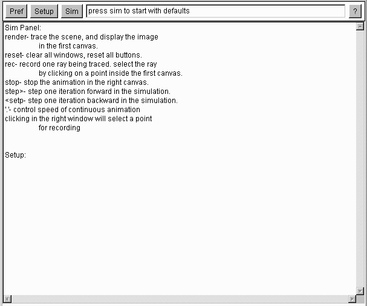

Help
The 'help panel' has information about how to use the simulator for the currently
selected algorithm.
 There is one component embedded within the help panel.
The help panel has a single text area encompasing the entire help panel.
When an algorithm is selected, it will update the help panel.